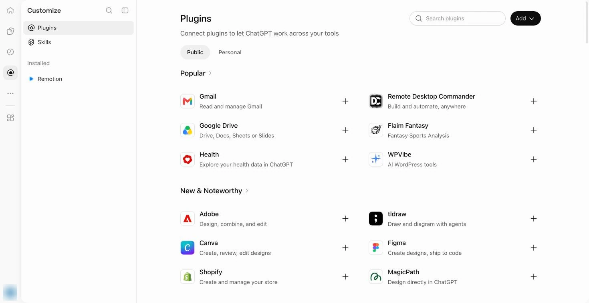
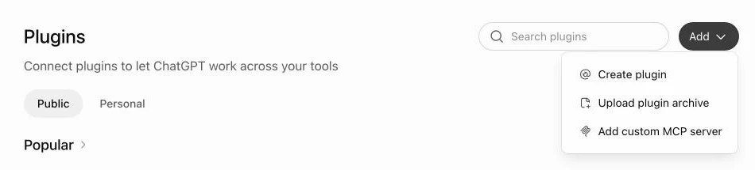
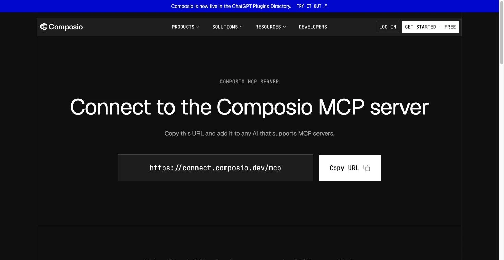
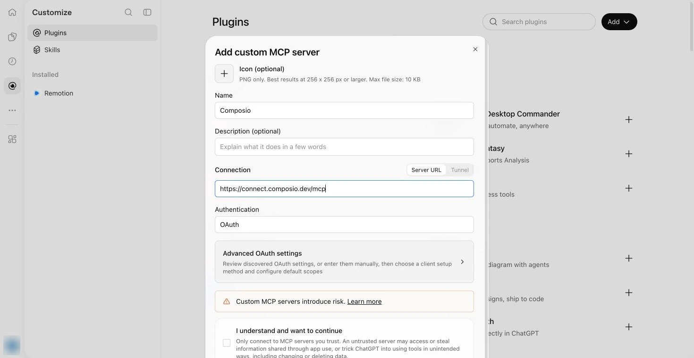

Как Composio связывает ChatGPT с приложениями
Composio - сервис, который передаёт команды из чата в твои приложения. ChatGPT выбирает действие, а Composio выполняет его в подключённом аккаунте. Composio подключаешь один раз, затем отдельно разрешаешь ему доступ к Gmail и Notion. Composio описывает такой порядок в своей инструкции.
Плагин - дополнение к ChatGPT, которое добавляет ему новые инструменты. MCP - способ, которым помощник обращается к внешним инструментам. У Composio есть плагин для ChatGPT и Codex и отдельный MCP-адрес. Выбери один из двух способов подключения ниже. Оба подключают Composio, поэтому использовать их вместе не нужно.
Подключение не открывает все приложения сразу. Доступ к каждому аккаунту ты разрешаешь отдельно. Разрешение читать письма ещё не даёт права создавать их. Сначала проверим чтение, а запись оставим на последний шаг.
Что нужно до начала
- ChatGPT в браузере. Открой каталог Plugins («Плагины») своим аккаунтом. Каталог есть на разных тарифах. Какие плагины ты можешь подключить, зависит от аккаунта и рабочего пространства. Подробнее об этом - в справке OpenAI.
- Аккаунт Composio. Если его нет, создай его по ссылке регистрации на странице Composio. Если подключаешь рабочий аккаунт, проверь, разрешает ли организация использовать Composio.
- Gmail в соседней вкладке. Открой ту почту, которую хочешь подключить. Если будешь подключать Notion (онлайн-блокнот для заметок, задач и баз знаний), понадобится его аккаунт и доступ к нужной странице.
Пароли вводи только на странице входа соответствующего сервиса. OAuth - способ разрешить приложению доступ без передачи пароля в чат. На странице сервиса ты выбираешь аккаунт и подтверждаешь запрошенные права. Так Composio подключает Gmail.
Шаг 1. Подключи Composio через Plugins
Открой Plugins («Плагины») и найди Composio через Search plugins («Поиск плагинов»). У Composio уже есть карточка в каталоге ChatGPT. Открой её и нажми Install plugin («Установить плагин»), если эта кнопка доступна. В появившемся окне войди в Composio и нажми Allow access («Разрешить доступ»). Дальше переходи к шагу 2.

Если подключаешь Composio вручную через MCP, открой форму добавления сервера. На странице Plugins нажми Add («Добавить»), затем Add custom MCP server («Добавить свой MCP-сервер»). Откроется форма подключения.

Открой страницу MCP Composio и нажми Copy URL («Скопировать адрес»). Вернись к форме ChatGPT и заполни её:

- Name («Имя»): Composio.
- Connection («Подключение»): оставь Server URL («Адрес сервера») и вставь адрес ниже.
- Authentication («Способ входа»): OAuth. Дополнительные настройки OAuth не заполняй вручную без указаний сервиса.
- I understand and want to continue («Я понимаю и хочу продолжить»): прочитай предупреждение и поставь галочку, если условия подходят.
https://connect.composio.dev/mcp
Прокрути форму ниже галочки и нажми кнопку добавления под ней. Если откроется авторизация Composio, войди в свой аккаунт и подтверди доступ. Само заполнение полей ещё не подключает сервис.
Ручной MCP зависит от тарифа и роли. По справке OpenAI на 08.10.2026, полный MCP с правом менять данные доступен на Business, Enterprise и Edu. На Pro можно подключить MCP для чтения в режиме разработчика. В организации доступ к этому режиму выдаёт администратор. Если настройки не загружаются или добавление недоступно, вернись к плагину из каталога; смена тарифа сама по себе не даёт доступа к каждому действию.
Результат: Composio установлен или добавлен, вход подтверждён, его можно выбрать в чате через @. Если появляется запрос на вход, заверши его до подключения Gmail.
Шаг 2. Разреши Composio доступ к Gmail
Открой новый чат ChatGPT, набери @ и выбери Composio. Отправь запрос ниже. Инструкция Gmail от Composio описывает подключение аккаунта через ссылку авторизации.
Подключи Gmail через Composio. Покажи ссылку авторизации, чтобы выбрать аккаунт. Пока не читай письма, ничего не создавай и не отправляй.Открой ссылку авторизации. На странице Google сравни адрес аккаунта с Gmail в соседней вкладке, прочитай запрашиваемые разрешения и подтверди подключение. Если предложен другой аккаунт, выбери нужный до согласия. Затем вернись в тот же чат.
Напиши: «Покажи адрес активного аккаунта Gmail через Composio, без чтения писем». В каталоге Gmail-инструментов для этого есть Get Profile («Получить сведения об аккаунте»). Сравни адрес в ответе с адресом открытой почты.
Результат: вход подтверждён, Composio показывает тот же Gmail-адрес, который открыт у тебя в соседней вкладке.
Шаг 3. Сверь непрочитанные письма с Gmail
В Gmail введи в поиск is:unread. Это официальный оператор поиска непрочитанных писем. Сравнивай темы, отправителей и время. Gmail может объединять несколько сообщений в одну цепочку, поэтому по одному счётчику нельзя понять, совпали ли письма.
Используй Composio и активный Gmail. Найди до пяти последних непрочитанных писем. Покажи отправителя, тему и дату каждого. Не отправляй письма, не помечай их прочитанными, не меняй ярлыки и ничего не удаляй. Если доступа нет, сообщи причину.Отправь запрос в чате с выбранным Composio. Сравни ответ с почтой. Непрочитанных писем нет - это нормально, если поиск в Gmail тоже ничего не нашёл. Если темы расходятся, сначала проверь активный аккаунт из шага 2.
Результат: темы и отправители из ответа совпадают с почтой либо оба поиска показывают отсутствие непрочитанных писем. Теперь ты видишь, что Composio читает нужную почту.
Шаг 4. Подключи Notion, если используешь его
Notion - онлайн-блокнот, где хранят заметки, планы и базы знаний. Если твои записи там, ChatGPT сможет находить нужную страницу и пересказывать её прямо в чате. Доступ к Notion нужно разрешить отдельно. В том же чате выбери Composio и попроси подключить Notion со ссылкой авторизации. Открой её, выбери нужное рабочее пространство и разреши доступ к странице, которую хочешь читать. В справке Notion объяснено: подключение получает доступ только к разрешённым страницам.
Вернись в чат и напиши точное название этой страницы. Попроси Composio найти её и показать заголовок с первым абзацем, ничего не меняя. Открой оригинал в Notion и сравни текст. Если Notion не используешь, этот шаг можно пропустить: для проверки Gmail он не нужен. Возможности поиска и чтения приведены в каталоге Composio для Notion.
Результат: ChatGPT читает выбранную страницу, и текст совпадает с Notion. Разрешения Gmail и Notion действуют отдельно.
Шаг 5. Создай черновик и открой его в Gmail
ChatGPT уже читает твою почту. Теперь проверим, может ли он в ней работать: написать письмо и сохранить его в Gmail. Черновик - самая безопасная проверка: письмо появляется в твоей почте, но никому не уходит. Получилось - значит, дальше ChatGPT может готовить за тебя ответы и письма, а отправку ты оставляешь за собой. У Composio есть Create email draft («Создать черновик письма»). Для этого у подключения должно быть право создавать черновики. Если ручной MCP может только читать данные, остановись на шаге 3.
В том же чате напиши свой адрес Gmail, проверенный в шаге 2, затем выбери Composio и отправь запрос:
Используй Composio и подключённый Gmail. Создай ровно один новый черновик письма. Получатель: мой адрес Gmail из предыдущего сообщения. Если адрес не указан, сначала спроси его. Тема: Проверка связи ChatGPT и Gmail. Текст: Это тестовый черновик, созданный через Composio. Не отправляй письмо, не добавляй других получателей и не меняй существующие письма. Покажи идентификатор сохранённого черновика. Если запись недоступна, сообщи причину.Если ChatGPT показывает подтверждение действия, сверь тему, получателя и действие. Разреши только создание черновика. Если предлагается отправка, отклони её. OpenAI описывает подтверждения действий и ограничения записи в справке MCP.
Открой Gmail, обнови страницу и зайди в Drafts («Черновики»). Найди тему «Проверка связи ChatGPT и Gmail», открой письмо и сравни текст и получателя. Письма нет - попроси Composio найти черновик по точной теме и показать его идентификатор; текст в чате сам по себе не доказывает, что черновик сохранён.
Результат: в Gmail открыт новый черновик с твоим адресом и тестовым текстом, письмо не отправлено. Значит, ChatGPT через Composio не только читает почту, но и пишет в ней: дальше можно поручать ему ответы на письма, а «Отправить» нажимать уже после проверки.
Сколько это стоит
Условия ниже сверены 08.10.2026. Стоимость Composio и подписка ChatGPT считаются отдельно.
- Composio Hobby: 0 долларов. В месяц доступно 100 000 вызовов инструментов. Для готовых подключений через приложение самого Composio из этого числа доступно до 20 000 вызовов. Когда лимит Hobby закончится, сервис приостановит работу.
- Composio Pro: 29 долларов в месяц. Из этой суммы 29 долларов можно потратить на вызовы инструментов. Сверх квоты базовый вызов стоит 0,0003 доллара, через приложение Composio - 0,0005 доллара. Это условия новых аккаунтов Composio; для регистрации до 15.08.2026 прежние условия сохраняются до 31.12.2026.
- ChatGPT: каталог Plugins доступен на разных тарифах. Plus - 20 долларов в месяц, Pro - от 100 долларов; Business - 25 долларов за пользователя в месяц при помесячном расчёте или 20 долларов при годовом, от двух пользователей. Цены указаны в официальной таблице OpenAI. У Enterprise и Edu отдельные условия.
Может ли ручной MCP менять данные, зависит от тарифа и прав в рабочем пространстве. Подробнее - в шаге 1. Если установишь плагин из каталога, проверь, какие действия доступны в твоём аккаунте. Даже с подпиской нужно отдельно разрешить доступ к Gmail.
Если не получилось
ChatGPT отвечает общими советами вместо данных из почты
Проверь, что Composio выбран через @, и повтори запрос чтения. Если появился запрос авторизации, заверши шаг 2.
Google отклоняет разрешение
Прочитай причину на странице входа. Если это рабочий аккаунт, организация может ограничивать доступ. Подробнее - в справке о подключении аккаунтов. Обратись к администратору с текстом отказа.
Notion не находит страницу
Проверь рабочее пространство и доступ подключения к самой странице. Страница может называться так же, но находиться в другом пространстве или быть недоступной подключению.
Composio сообщает о лимите
Открой свой аккаунт Composio и сравни расход с условиями тарифа. Если лимит закончился, повторять запрос бесполезно.
Если нужно отозвать доступ Google, используй управление сторонними подключениями своего Google-аккаунта. Отключение приложения не удаляет уже созданный черновик из почты.
ChatGPT работает в твоей почте. А что ещё он может делать за тебя?
Связка работает. Как собрать из таких связок систему, которая приводит клиентов?
Подключить сервис - половина дела. Дальше нужен порядок, в котором ИИ-агенты сами ведут задачи от заявки до ответа клиенту. Это разбирают на Концентрате Ивана Сергеева: 13 октября - команда ИИ-агентов, 14 октября - шесть способов заработать на нейросетях. Онлайн, 19:00 по Москве. Участие бесплатное, регистрация на сайте до 14 октября
ЗарегистрироватьсяРеклама. ИП Сергеев И. С., ИНН 352511695540. erid: 2VtzqviiWtm